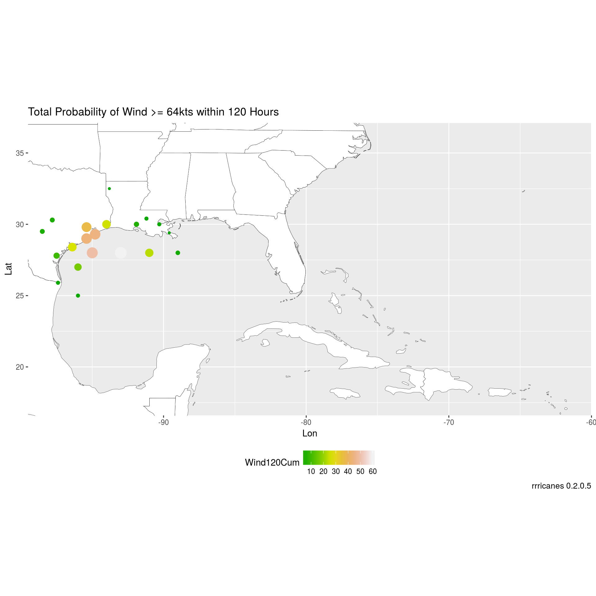

library(dplyr)
library(ggplot2)
library(rrricanes)
library(sp)key <- "AL092008"
adv <- 42wndprb <- load_storm_data("wndprb") %>% filter(Key == key, Adv <= adv)## Parsed with column specification:
## cols(
## Key = col_character(),
## Adv = col_integer(),
## Date = col_datetime(format = ""),
## Location = col_character(),
## Wind = col_integer(),
## Wind12 = col_integer(),
## Wind24 = col_integer(),
## Wind24Cum = col_integer(),
## Wind36 = col_integer(),
## Wind36Cum = col_integer(),
## Wind48 = col_integer(),
## Wind48Cum = col_integer(),
## Wind72 = col_integer(),
## Wind72Cum = col_integer(),
## Wind96 = col_integer(),
## Wind96Cum = col_integer(),
## Wind120 = col_integer(),
## Wind120Cum = col_integer()
## )gis_adv <- gis_advisory(key = key, advisory = adv) %>% gis_download()## OGR data source with driver: ESRI Shapefile
## Source: "/tmp/Rtmp86x1Vv", layer: "al092008.042_5day_lin"
## with 2 features
## It has 9 fields
## OGR data source with driver: ESRI Shapefile
## Source: "/tmp/Rtmp86x1Vv", layer: "al092008.042_5day_pgn"
## with 2 features
## It has 9 fields
## OGR data source with driver: ESRI Shapefile
## Source: "/tmp/Rtmp86x1Vv", layer: "al092008.042_5day_pts"
## with 13 features
## It has 20 fields
## OGR data source with driver: ESRI Shapefile
## Source: "/tmp/Rtmp86x1Vv", layer: "al092008.042_ww_wwlin"
## with 5 features
## It has 10 fieldsGet bounding box of the forecast polygon.
bbox <- bbox(gis_adv$al092008_042_5day_pgn)Generate a base plot of the Atlantic ocean.
bp <- al_tracking_chart(color = "black", fill = "white", size = 0.1, res = 50)## Regions defined for each Polygons
## Regions defined for each PolygonsI like to add a little cushion for the map inset and forecast cone data.
lat_min <- bbox[2,1] - 5
lat_max <- bbox[2,2] + 5
lon_min <- bbox[1,1] - 10
lon_max <- bbox[1,2] + 10Build a thin tracking map for the inset.
bp_inset <- ggplotGrob(bp +
geom_rect(mapping = aes(xmin = lon_min, xmax = lon_max,
ymin = lat_min, ymax = lat_max),
color = "red", alpha = 0) +
theme_bw() +
theme(axis.title = element_blank(),
axis.ticks = element_blank(),
axis.text.x = element_blank(),
axis.text.y = element_blank(),
plot.margin = margin(0, 0, 0, 0, "pt")))Modify original bp zoomed in on our area of interest.
bp <- bp +
coord_equal(xlim = c(lon_min, lon_max),
ylim = c(lat_min, lat_max)) +
scale_x_continuous(expand = c(0, 0)) +
scale_y_continuous(expand = c(0, 0)) +
labs(x = "Lon",
y = "Lat",
caption = sprintf("rrricanes %s", packageVersion("rrricanes")))Combine bp and bp_inset to finalize initial base plot. bp will be a base plot without the inset. bpi will have the inset.
bpi <- bp + annotation_custom(grob = bp_inset, xmin = lon_max - 5,
xmax = lon_max - 1, ymin = -Inf,
ymax = lat_min + 5)The wndprb will not have coordinates for cities. An option is al_prblty_stations. However, please note this function may become deprecated.
wndprb <- wndprb %>%
left_join(al_prblty_stations(), by = "Location")Check wndprb for NA values in Lat, Lon.
any(is.na(wndprb$Lat), is.na(wndprb$Lon))## [1] FALSEwndprb_adv42 <- wndprb %>% filter(Adv == adv, Wind >= 64)
bp +
geom_point(data = wndprb_adv42,
aes(x = Lon, y = Lat, color = Wind120Cum, size = Wind120Cum)) +
scale_color_gradientn(colors = terrain.colors(10)) +
coord_equal(xlim = c(min(wndprb$Lon) - 1,
max(wndprb$Lon) + 1),
# Account for extra padding of min Lat in original plot
ylim = c(min(wndprb$Lat) + 2,
max(wndprb$Lat) + 1)) +
guides(size = FALSE) +
theme(legend.position = "bottom",
legend.box = "vertical") +
labs(title = "Total Probability of Wind >= 64kts within 120 Hours")